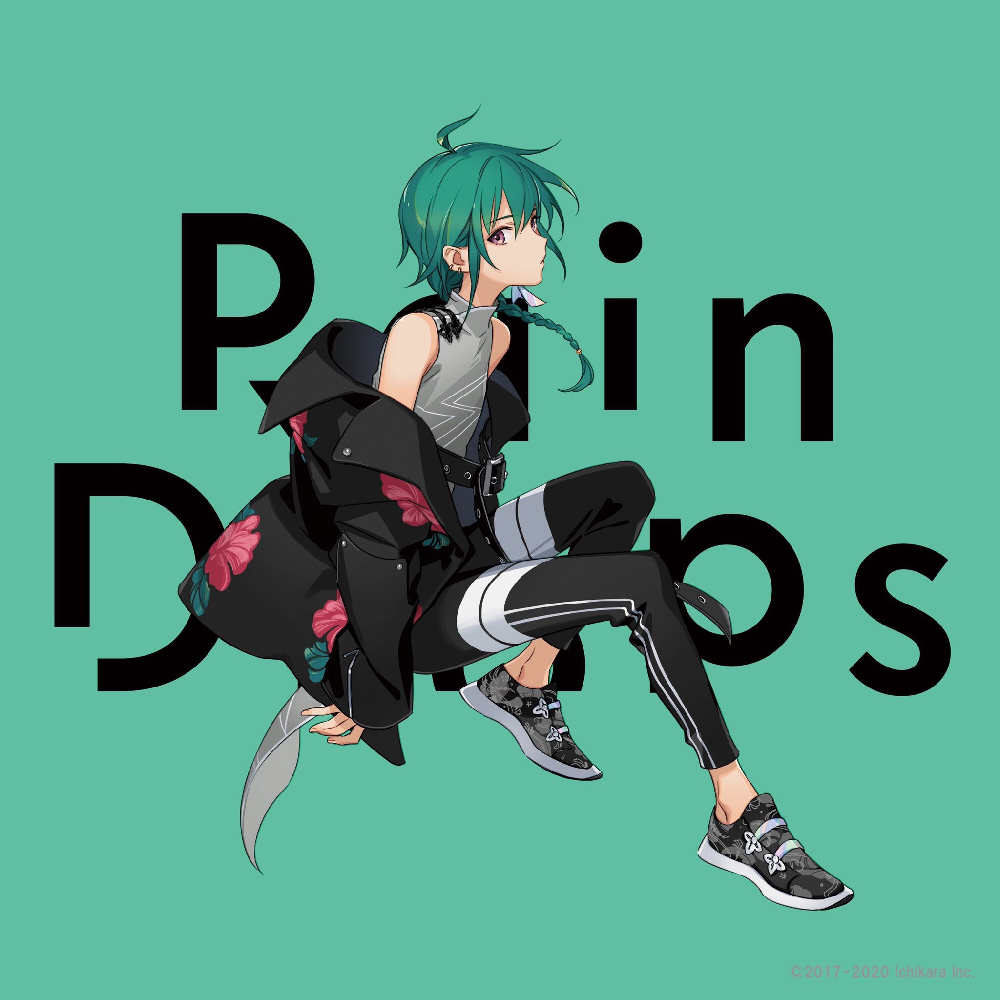

Ryushen
緑仙
Ryushen's real name is Sengawa Midori. An 18 year old, 3rd year high school student who loves themselves and think they can do anything.
Learning Kenpō and hates to lose. After failing to make their high school debut, they started livestreaming with the goal of making friends.
Twitter
YouTube
